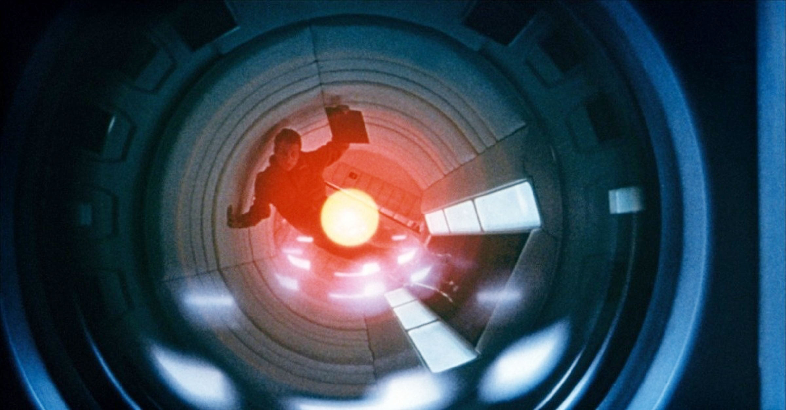
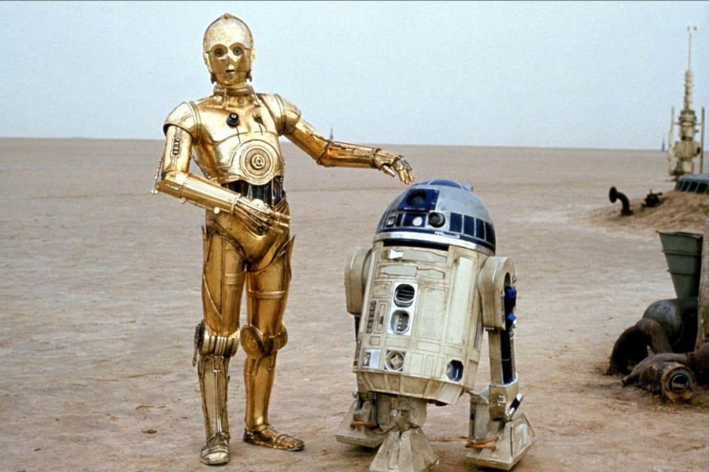
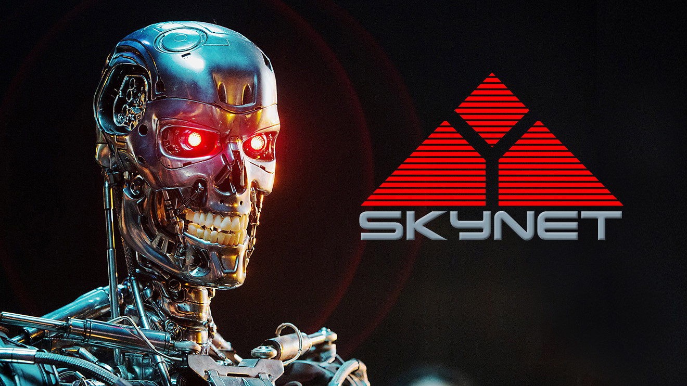
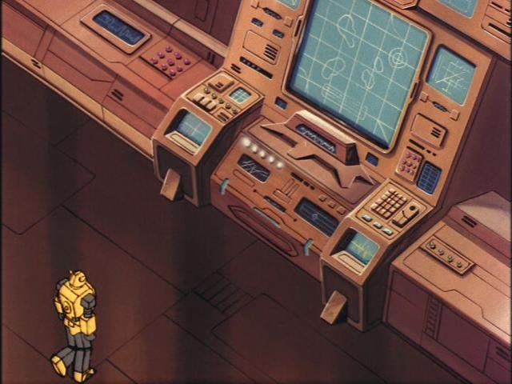
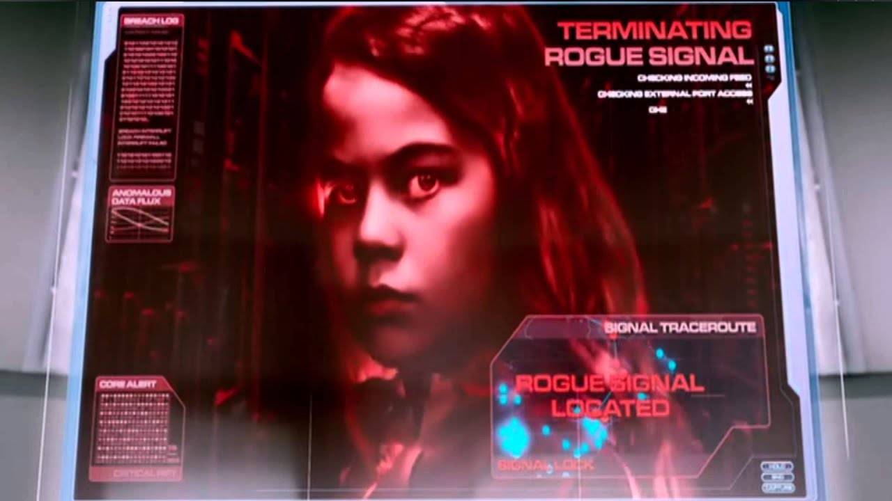
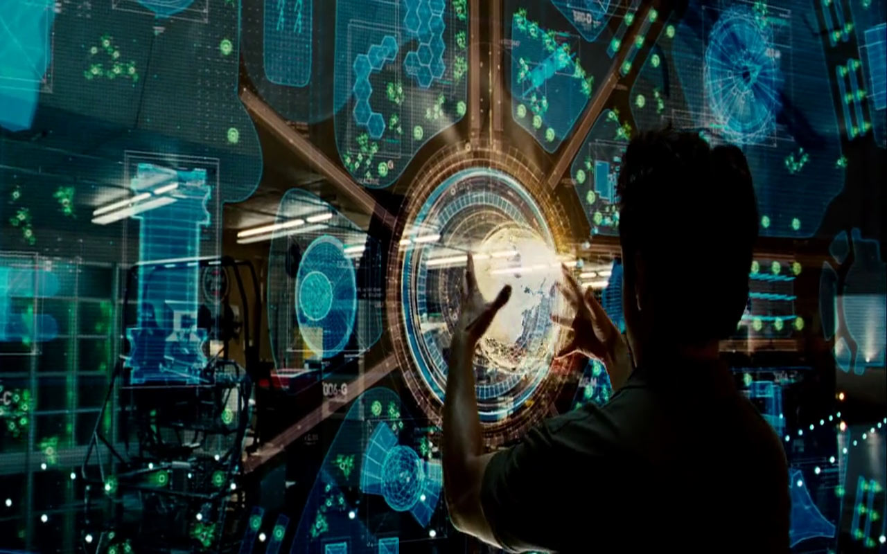
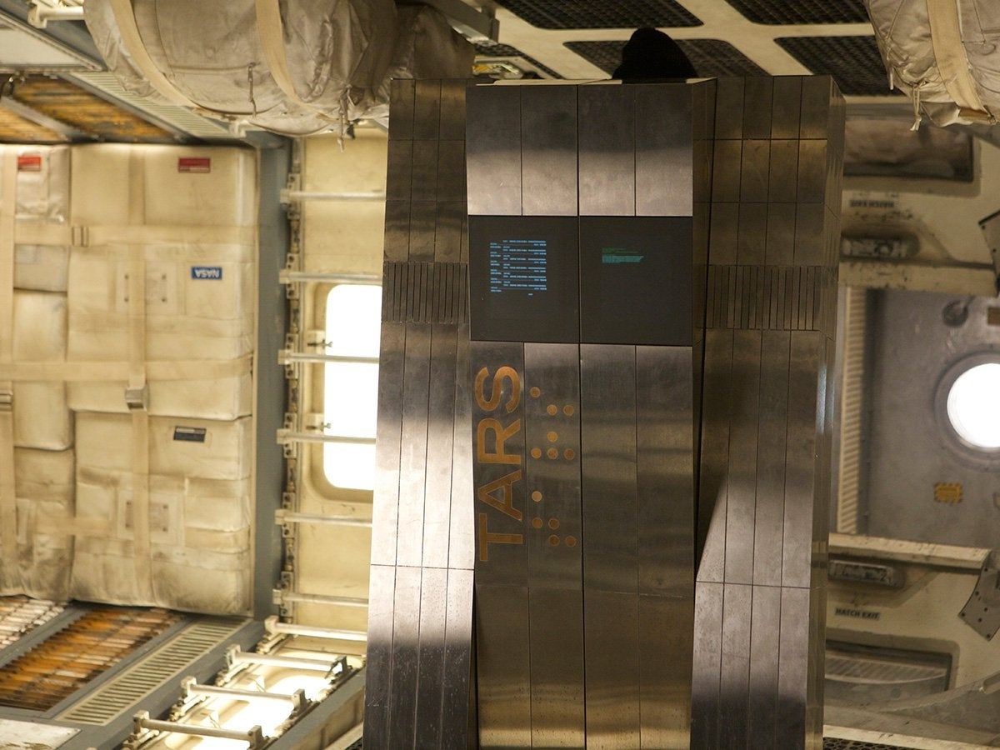
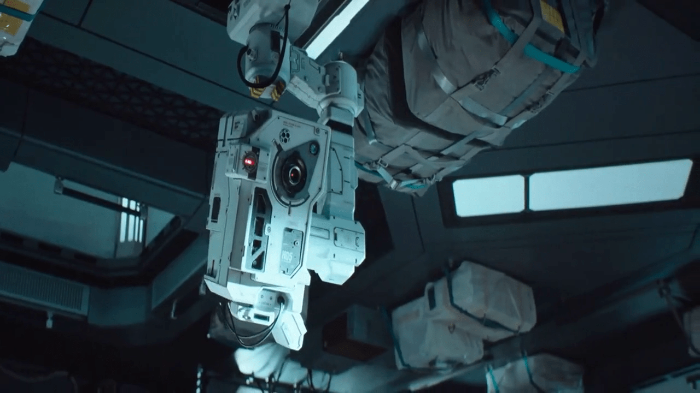

Personal Computer
In many science fictions,

HAL 9000 (2001: A Space Odyssey, 1968)

C3PO and R2D2 (Star Wars, 1977)

Skynet (The Terminator, 1984)

Teletraan I (Transformers: Generation 1, 1984)

Red Queen (Resident Evil, 1996)
Matrix (The Matrix, 1999)

JARVIS (IRON MAN, 2008)

TARS (Intersteller, 2014)

MOSS (The Wandering Earth, 2019)